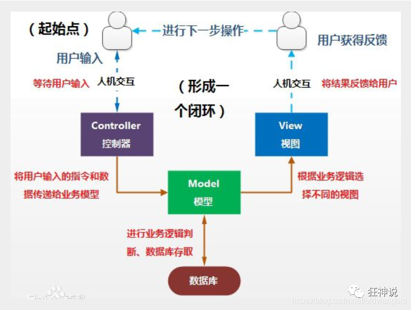
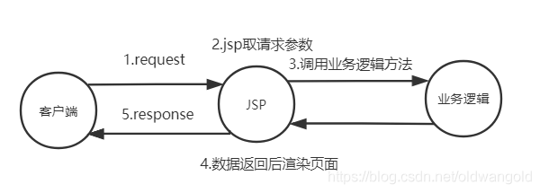
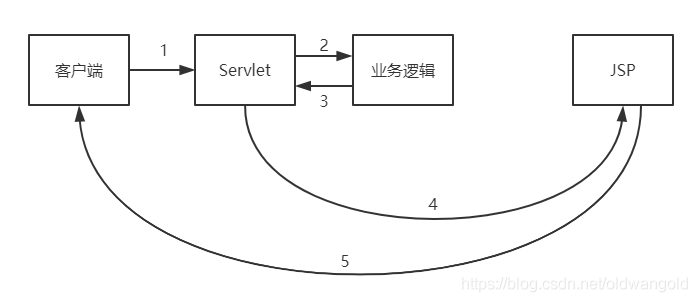
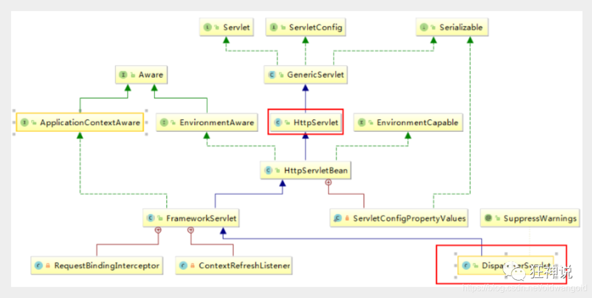
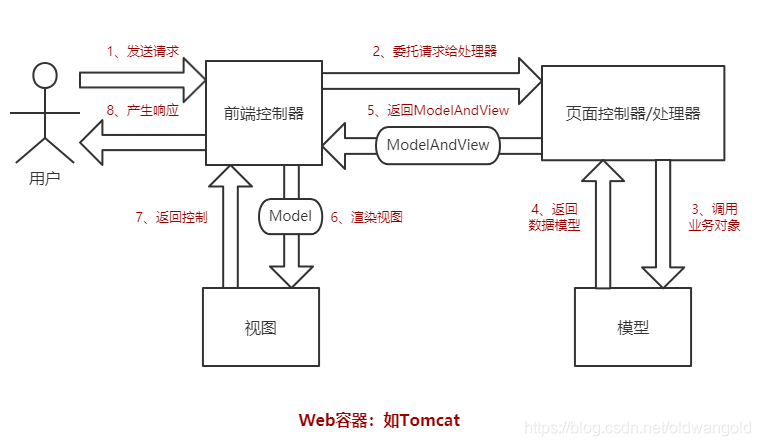
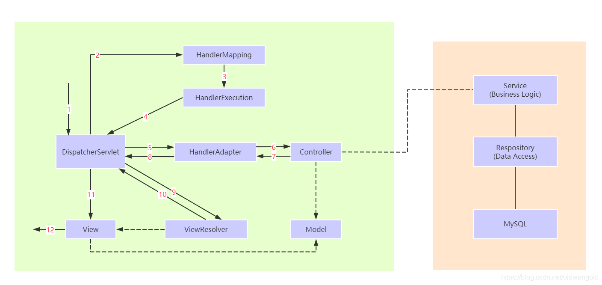

SpringMVC
回顾MVC
什么是MVC
- MVC是模型（Model）、视图（View）、控制器（Controller）的简写，是一种软件设计规范。
- 是将业务逻辑、数据、显示分离的方法来组织代码
- MVC主要作用是降低了视图与业务逻辑间的双向耦合
- MVC不是一种设计模式，MVC是一种架构模式。不同的MVC存在差异
Model（模型）：数据模型，提供要展示的数据，因此包括数据和行为，可以认为是领域模型或JavaBean组件（包括数据和行为），不过现在一般都分离开来：Value Object（数据Dao）和服务层（行为Service）。也就是模型提供了模型数据查询和模型数据的状态更新等功能，包括数据和业务。
View（视图）：负责进行模型的展示，一般就是我们见到的用户界面，客户想看到的东西。
Controller（控制器）：接收用户请求，委托给模型进行处理（状态改变），处理完毕后把返回的模型数据返回给视图，由视图负责展示。也就是说控制器做了个调度员的工作。
最典型的MVC就是JSP+Servlet+JavaBean的模式。
JSP：本质就是一个Servlet
dao
service
servlet：转发（url地址不变），重定向
jsp/html
前端 数据传输 实体类
实体类：用户名，密码，生日，爱好，……等20个属性
前端：用户名 密码
如果实体类有20个属性，而前端只需要两个属性，那么就不需要将信息封装成20个属性的对象。
pojo：实体类 User
vo：视图层 UserVo
dto：数据传输

Model1时代
- 在web早期的开发中，通常采用的都是Model1。
- Model1中，主要分为两层，视图层和模型层。

- Model1优点：架构简单，比较适合小型项目开发；
- Model1缺点：JSP职责不单一，职责过重，不便于维护；
Model2时代
Model2把一个项目分成三部分，包括视图、控制、模型。

- 用户发请求
- Servlet接收请求数据，并调用对应的业务逻辑方法
- 业务处理完毕，返回更新后的数据给servlet
- servlet转向到JSP，由JSP来渲染页面
- 响应给前端更新后的页面
职责分析：
Controller：控制器
- 取得表单数据
- 调用业务逻辑
- 转向指定的页面
Model：模型
- 业务逻辑
- 保存数据的状态
View：视图
- 显示页面
Model2这样不仅提高的代码的复用率与项目的扩展性，且大大降低了项目的维护成本。Model 1模式的实现比较简单，适用于快速开发小规模项目，Model1中JSP页面身兼View和Controller两种角色，将控制逻辑和表现逻辑混杂在一起，从而导致代码的重用性非常低，增加了应用的扩展性和维护的难度。Model2消除了Model1的缺点。
假设：你的项目的架构，是设计好的？还是演进的？
一般都是演进的架构！
MVC框架要做哪些事情
- 将url映射到java类或java类的方法
- 封装用户提交的数据
- 处理请求–调用相关的业务处理–封装响应数据
- 将响应的数据进行渲染 . jsp / html 等表示层数据
说明：
常见的服务器端MVC框架有：Struts、Spring MVC、ASP.NET MVC、Zend Framework、JSF；常见前端MVC框架：vue、angularjs、react、backbone；由MVC演化出了另外一些模式如：MVP、MVVM 等等…
MVC：
- MVVM： M V VM ViewModel：双向绑定
- Spring：大杂烩，我们可以将SpringMVC中所有要用到的bean，注册到Spring中。
什么是SpringMVC
概述
Spring MVC是Spring Framework的一部分，是基于Java实现MVC的轻量级Web框架。
官方文档：https://docs.spring.io/spring/docs/5.2.0.RELEASE/spring-framework-reference/web.html#spring-web
为什么学习SpringMVC？
- 轻量级，简单易学
- 高效，基于请求相应的MVC框架
- 与Spring兼容性好，无缝结合
- 约定大于配置
- 功能强大：RESTful、数据验证、格式化、本地化、主题等
- 简洁灵活
Spring的web框架围绕DispatcherServlet[调度Servlet]设计。
DispatcherServlet的作用是将请求分发到不同的处理器。从Spring 2.5开始，使用Java 5或者以上版本的用户可以采用基于注解形式进行开发，十分简洁；
正因为SpringMVC好 , 简单 , 便捷 , 易学 , 天生和Spring无缝集成(使用SpringIoC和Aop) ， 使用约定优于配置， 能够进行简单的junit测试 ，支持Restful风格 ，异常处理 ，本地化， 国际化，数据验证 ，类型转换 , 拦截器 等等…所以我们要学习 。
中心控制器
Spring的web框架围绕DispatcherServlet设计。DispatcherServlet的作用是将请求分发到不同的处理器。从Spring 2.5开始，使用Java 5或者以上版本的用户可以采用基于注解的controller声明方式。
Spring MVC框架像许多其他MVC框架一样， 以请求为驱动， 围绕一个中心Servlet分派请求及提供其他功能，DispatcherServlet是一个实际的Servlet (它继承自HttpServlet 基类)。

SpringMVC的原理如下图所示：
当发起请求时被前置的控制器拦截到请求，根据请求参数生成代理请求，找到请求对应的实际控制器，控制器处理请求，创建数据模型，访问数据库，将模型响应给中心控制器，控制器使用模型与视图渲染视图结果，将结果返回给中心控制器，再将结果返回给请求者。

SpringMVC执行原理

图为SpringMVC的一个较完整的流程图，实线表示SpringMVC框架提供的技术，不需要开发者实现，虚线表示需要开发者实现。
简要分析执行流程
- DispatcherServlet表示前置控制器，是整个SpringMVC的控制中心。用户发出请求，DispatcherServlet接收请求并拦截请求。
我们假设请求的url为 : http://localhost:8080/SpringMVC/hello
如上url拆分成三部分：
http://localhost:8080服务器域名
SpringMVC部署在服务器上的web站点
hello表示控制器
通过分析，如上url表示为：请求位于服务器localhost:8080上的SpringMVC站点的hello控制器。 - HandlerMapping为处理器映射。DispatcherServlet调用HandlerMapping,HandlerMapping根据请求url查找Handler。
- HandlerExecution表示具体的Handler,其主要作用是根据url查找控制器，如上url被查找控制器为：hello。
- HandlerExecution将解析后的信息传递给DispatcherServlet,如解析控制器映射等。
- HandlerAdapter表示处理器适配器，其按照特定的规则去执行Handler。
- Handler让具体的Controller执行。
- Controller将具体的执行信息返回给HandlerAdapter,如ModelAndView。
- HandlerAdapter将视图逻辑名或模型传递给DispatcherServlet。
- DispatcherServlet调用视图解析器(ViewResolver)来解析HandlerAdapter传递的逻辑视图名。
- 视图解析器将解析的逻辑视图名传给DispatcherServlet。
- DispatcherServlet根据视图解析器解析的视图结果，调用具体的视图。
- 最终视图呈现给用户。
@RestController//返回值不会被视图解析器处理,直接返回字符串
@Controller//会被视图解析器处理
@Component //组件
@Service //service层
@Controller //controllor层
@Repository //dao层
RestFul风格
转发和重定向
return "/index.jsp";//转发
return "forward:/index.jsp";//转发
return "redirect:/index.jsp"//重定向
jackson
ObjectMapper mapper = new ObjectMapper();
String s = mapper.writeValueAsString(obj);//将对象转换成json